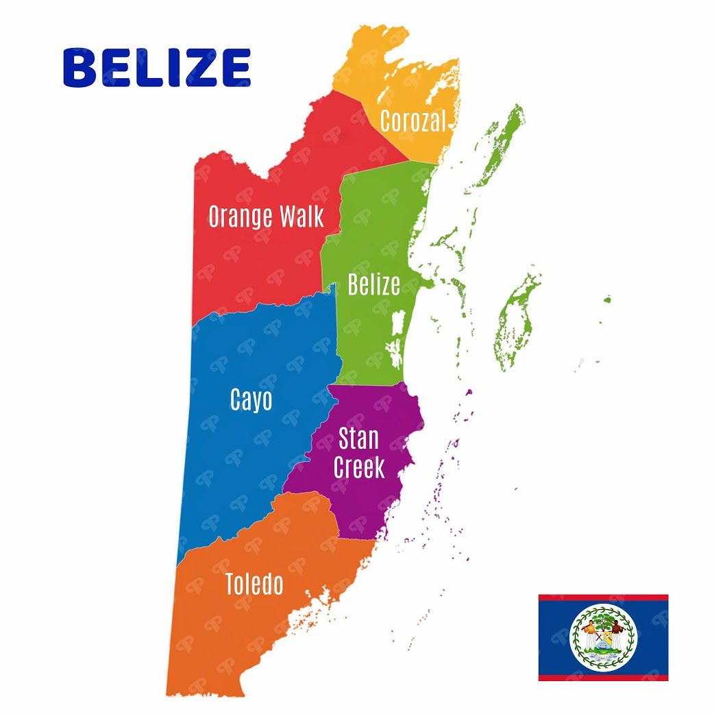
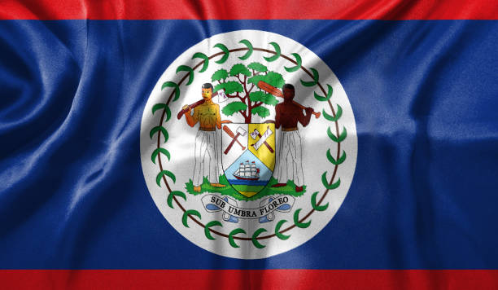

Tucked between the Caribbean Sea and the rainforest on the eastern coast of Central America, Belize is the home of a small and diverse nation. The country, formerly known as British Honduras, was the United Kingdom's last colony on the American mainland and still maintains strong ties with Britain.
Today Belize, which considers itself part of both the Caribbean and Central America, is cultivating relations with Latin America and the United States, although there is a lingering dispute with neighbouring Guatemala, which has made claim to part of Belize's territory in the past.
Tourism is a major source of foreign currency. Belize's attractions include wildlife, Mayan ruins and one of the longest barrier reefs in the world.

50 interesting facts about Belize - Pelican Reef Villas Resort Belize is home to the second biggest barrier reef system in the world, the Mesoamerican Barrier Reef System, which is also referred to as Great Mayan Reef. Belize is a favorite sunbaked heaven with some cool places to hang out. It's the ONLY jaguar reserve on the planet, the Cockscomb Basin Wildlife Sanctuary.
